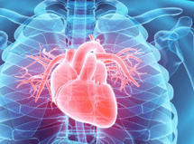

Daugiau nei 70% nusikaltimų (sunkaus organizmo sužalojimo padarymas, žmogžudystės, vagystės, prievartavimai) padaromi alkoholinio apsvaigimo būsenoje.
Dažnas alkoholinių gėrimų vartojimas sukelia šeimos iširimą, draugų ir pažįstamų netekimą.
Depresija, širdies priepuolis, regėjimo praradimas, hepatitas, opos, vėžys - tai toil gražu ne visas alkoholio vartojimo pasekmių sąrašas. Alkoholis neigiamai veikia VISUS žmogaus organus.
Esant priklausomybei nuo alkoholio, vertybės keičiasi ir žmogus praranda galimybę pasirūpinti savimi ir savo šeima.
Pasirodymas darbe neblaivioje būsenoje sukelia atleidimą iš darbo pagal straipsnį.
Kasdien pasaulyje dėl alkoholio nusižudo 3 tūkstančiai žmonių. Kasmet - maždaug 1 milijonas (1,5% visų mirčių).
Mylima šeima, prestižinis darbas, jaukūs namai - visa tai gali būti prarasta dėl alkoholio. Susigrąžinti bus daug sunkiau.
Alkoholis trumpam atpalaiduoja organizmą ir pagerina nuotaiką padidindamas dopamino - laimės hormono kiekį. Bet vėliau organizmas prisitaiko prie hormono gamybos, o jo reikia vis daugiau ir daugiau, kad būtų pasiektas norimas poveikis. Be to, susidaro tetrahidroizochinolinas - medžiaga, kuri blokuoja dopamino ir serotonino gamybą.
Žmogus nustoja mėgautis gyvenimu be stimuliacijos, patenka į depresines nuotaikas. Tūkstančiai neuronų sunaikinami ir jų nebeįmanoma atkurti. Štai kodėl alkoholis pablogina atmintį ir koordinaciją, apsunkina sprendimų priėmimą ir sukelia agresiją.
Mokslininkų komanda iš JAV Šiaurės Karolinos universiteto sugebėjo aptikti geną, galintį apsaugoti nuo alkoholizmo ir turintį labai stiprų poveikį žmogaus organizmui, - teigia tyrimo autorius, genetikas Kirkas Wilhelmsenas.
Tam tikra CYP2E1 geno versija daro žmogų labai jautrų alkoholiui, ir jis neturi jokio noro prisiliesti prie alkoholinių gėrimų. Šie duomenys leido, pasinaudojus specialią žolelių rinkiniu, dirbtinai paveikti geną ir priklausomiems žmonėms sukelti pasibjaurėjimą alkoholiu ir alkoholio netoleravimą.
Taip buvo sukurtas organinis vaistas Alkotox, kuris padėjo įveikti daugiau
nei
2 milijonų žmonių priklausomybę nuo alkoholio visame pasaulyje. *
užkerta kelią besaikiam alkoholio vartojimui, palengvina potraukį alkoholiniams gėrimams, pašalina iš organizmo nuodus ir toksinus.
valo ir atkuria kepenų ląsteles po ilgo alkoholio vartojimo. Normalizuoja medžiagų apykaitos procesus organizme.
pašalina patinimą, stimuliuoja skrandžio veikimą, gerina apetitą, ramina nervų sistemą.
skatina vėmimo reflekso atsiradimą vartojant alkoholį bei turi antidepresinių ir raminamųjų savybių.
slopina potraukį alkoholinių gėrimų vartojimui, atstato širdies ir kraujagyslių sistemą, normalizuoja virškinimo sistemą.
Natūraliu būdu gaminamas dopaminas, kuris blokuoja postalkoholinę depresiją.
Vaisto sudėties minkštos raminamosios žolelės užkerta kelia abstinencijos simptomams, pašalina nervinę įtampą, nerimą, agresiją, dirglumą.
Nervų sistemos procesai normalizuojasi ir smegenų malonumo centrų veikimas suaktyvinamas be etanolio. Pamažu mažėja streso hormonų lygis, dingsta poreikis atsipalaiduoti vartojant alkoholį.
Priklausomybė nuo alkoholio išnyksta, nes organizmas visiškai persistato taip, kad natūraliai gautų džiaugsmo hormoną. Atkuriamas svarbiausių organizmo organų ir sistemų veikimas, kuriam pakenkė alkoholis.
Savo praktikoje aš nenaudoju kodavimo, arba vadinamosios antabuzinės terapijos. Tai kada pacientui įvedamas vaistas, kuris sąveikaudamas su alkoholiu sukelia stiprų organizmo apsinuodijimą (pykinimą, vėmimą, galvos svaigimą, virškinimo organų skausmą).
Po Alkotox pasirodymo praktikoje tapo daug lengviau kovoti su priklausomybe.
98% atvejų jau po kelių dienų Alkotox vartojimo pasiekiamas potraukio alkoholiui sumažėjimas. Natūralus vaistas Alkotox veikia pagal paprastą algoritmą: pasibjaurėjimą alkoholiu > agresijos ir abstinencijos sindromo sumažėjimas > organizmo atstatymas.
Mano pacientai grįžta į normalų gyvenimą nepaisant alkoholizmo sunkumo laipsnio. Todėl visiems rekomenduoju Alkotox kaip vienintelį saugų vaistą atsikratyti potraukio alkoholiui.
Nelaukite, kol žlugs jūsų gyvenimas. sekite pavyzdžiu!
Petrauskienė
36 metai
Aš visada maniau, kad žinau alkoholio saiką ir elgiuosi pakankamai adekvačiai apsvaigimo būsenojė. Bet kartą prisigėriau iki atminties praradimo. Kitąryt draugai parodė man vaizdo įrašą iš vakarėlio, kuriame šokiu topless bare, o aš to visai nepamenu. Bet net laukinė gėda ir pasibjaurėjimas savimi negalėjo manęs sustabdyti. Bandydavau keletą būdų atsikratyti priklausomybės nuo alkoholio – be prasmės. Padėjo man tiktai Alkotox. Pirmas penkias dienas nerimavau, netikėjau, kad padės. O po to palengvėjo. Pradėjau jaustis geriau, atrodyti patraukliau, pakeitė bendravimo ratą, pagerėjo asmeninis gyvenimas. Nuo tol 10 mėnesių nesu vartojusi net silpno alkoholio.
Rūžienė
28 metai
Mano vyras turi labai nervingą darbą ir kiekvieną penktadienį jis malšindavo savo stresą vartodamas alkoholį. Iš pradžių tik penktadieniais, po to šeštadieniais, o po kelerių metų pradėjo gerti kiekvieną dieną. Aš išsigandau, nes jis pasidarė labai agresyvus. Pagaliau aš pradėjau ieškoti būdų, kaip jį išgydyti, nes jis pats problemos nepripažino. Ir laimei - radau Alkotox! Aš jį kasryt tiesiog primaišydavau į arbatą ir gana. Po mėnesio vyras nebegėrė net stiklinės. Darbe viskas pagerėjo, kaip ir namuose. Jis labia pasikeitė į gerąją pusę.
Paukštelis
44 metai
Kai žmona mane paliko, aš galėjau susiraminti tiktai alkoholiu. Kelis mėnesius beveik kiekvieną dieną gerdavau, praradau darbą, supratau, kad netrukus būsiu pačiam dugne, bet nieko negalėjau padaryti. Ačiū draugui, mane ištraukė. Atnešė man Alkotox, įtikino pradėti gydymą šiuo vaistu. Dabar galiu tvirtai pasakyti, kad esu blaivus žmogus. Mano priklausomybė dingo. Ir jei jūs ar jūsų artimieji turite tokią pačią problemą, pabandykite Alkotox, jis padės!